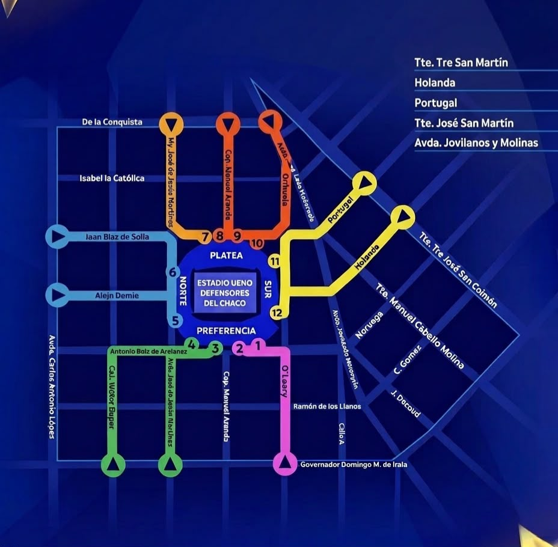

Sábado 18 de Octubre a las 18:30 hs
Correspondiente al Torneo Clausura
Sector
Descripción
Capacidad
Precio General
Precio Socio
Platea Preferencial
Ubicación central con visión panorámica
4.200
250.000
180.000
Palco
Sector VIP con servicios
1.500
400.000
300.000
Gradería Norte
Tribuna popular Norte
9.800
100.000
70.000
Gradería Sur
Tribuna popular Sur
9.800
100.000
70.000
Sector Visitante
Ubicación para la hinchada rival
6.000
120.000
120.000
Procedimiento para Llegar y Acceder al Estadio
Estacionar el vehículo en el predio habilitado o bajarse del transporte público en la parada más cercana.
Dirigirse a la entrada que corresponda según el sector indicado en la entrada (Norte, Sur, Preferencial, Visitante).
Presentar la entrada impresa o digital en la primera verificación del personal de seguridad.
Pasar el control de bolso y mochilas en las requisas.
Validar la entrada en los torniquetes electrónicos o lectores de códigos QR.
Ingresar en el estadio y seguir las señales hacia la gradería o sector.
Ubicar fila y el número de asiento indicado en el ticket.
Plano del Estadio

Distribución de sectores: Platea Preferencial al centro, Palcos en laterales VIP,
Graderías Norte y Sur populares, y Sector Visitante habilitado para hinchada rival.